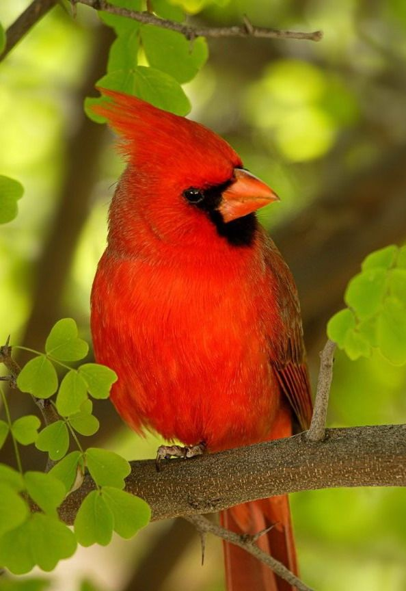

Cardenal

Habita desde el sur de Canadá hasta el norte de Guatemala y Belice, pasando por la parte
oriental de los Estados Unidos desde Maine hasta Texas y por México. Se le puede encontrar
en bosques, jardines y pantanos. El cardenal norteño es un pájaro cantor de tamaño medio
con una longitud corporal de 21-23 cm. El Cardenal Rojo salta por entre las ramas a baja
altura, en el suelo, o cerca de él. Suele cantar o acicalarse en ramas de arbustos a mayor altura.
Cuando se agita, para su distintiva cresta, mientras que cuando descansa la mantiene baja y apenas
visible. Es típico que los veas dando vueltas solo en parejas durante la temporada de reproducción,
pero durante el invierno y el otoño, pueden formar grandes grupos, que van de una a varias docenas
de ellos. Los Cardenales Rojos comen principalmente semillas y frutas.
- busca la mayor parte de su alimento saltando sobre el suelo o en arbustos bajos, y a veces a mayor altura en árboles.
- El macho canta para defender el territorio de nidificación y ataca de manera activa a los machos que intentan inmiscuirse.
- Su reconocible canto, el cual es bastante fuerte y claro, tiene la capacidad de alegrarle la mañana a cualquiera que puede animar cualquiera.
- aproximadamente. La diferencia que existe entre ambos es mínima, los machos tienen un color rojo brillante y las hembras poseen color marrón.
- Esta hermosa ave cuenta con un poderoso pico de forma, adaptado a su alimentación que es a base de semillas.
Regresar al menu principal